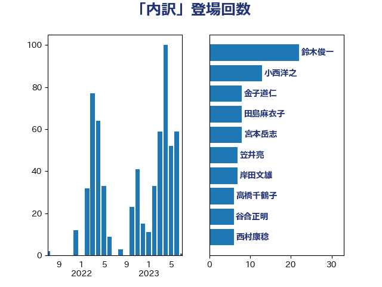

単語「内訳」

| 鈴木俊一 | 自由民主党 | 22 回 |
| 小西洋之 | 立憲民主党 | 13 回 |
| 金子道仁 | 日本維新の会 | 8 回 |
| 田島麻衣子 | 立憲民主党 | 8 回 |
| 宮本岳志 | 日本共産党 | 8 回 |
| 笠井亮 | 日本共産党 | 7 回 |
| 岸田文雄 | 自由民主党 | 7 回 |
| 高橋千鶴子 | 日本共産党 | 6 回 |
| 谷合正明 | 公明党 | 6 回 |
| 西村康稔 | 自由民主党 | 6 回 |
| 浜田靖一 | 自由民主党 | 6 回 |
| 勝部賢志 | 立憲民主党 | 6 回 |
| 高木かおり | 日本維新の会 | 5 回 |
| 羽田次郎 | 立憲民主党 | 5 回 |
| 斉藤鉄夫 | 公明党 | 5 回 |
| 川合孝典 | 国民民主党 | 5 回 |
| 古賀之士 | 立憲民主党 | 5 回 |
| 加藤勝信 | 自由民主党 | 5 回 |
| 馬淵澄夫 | 立憲民主党 | 4 回 |
| 長友慎治 | 国民民主党 | 4 回 |
| 竹詰仁 | 国民民主党 | 4 回 |
| 神谷宗幣 | 参政党 | 4 回 |
| 田村貴昭 | 日本共産党 | 4 回 |
| 横沢高徳 | 立憲民主党 | 4 回 |
| 松野博一 | 自由民主党 | 4 回 |
| 岸真紀子 | 立憲民主党 | 4 回 |
| 山崎誠 | 立憲民主党 | 4 回 |
| 奥野総一郎 | 立憲民主党 | 4 回 |
| 倉林明子 | 日本共産党 | 4 回 |
| 住吉寛紀 | 日本維新の会 | 4 回 |
| 仁比聡平 | 日本共産党 | 4 回 |
| 井坂信彦 | 立憲民主党 | 4 回 |
| 馬場雄基 | 立憲民主党 | 3 回 |
| 階猛 | 立憲民主党 | 3 回 |
| 鈴木義弘 | 国民民主党 | 3 回 |
| 鈴木敦 | 国民民主党 | 3 回 |
| 赤木正幸 | 日本維新の会 | 3 回 |
| 西岡秀子 | 国民民主党 | 3 回 |
| 藤田文武 | 日本維新の会 | 3 回 |
| 萩生田光一 | 自由民主党 | 3 回 |
| 福田昭夫 | 立憲民主党 | 3 回 |
| 牧島かれん | 自由民主党 | 3 回 |
| 東徹 | 日本維新の会 | 3 回 |
| 斎藤アレックス | 国民民主党 | 3 回 |
| 後藤茂之 | 自由民主党 | 3 回 |
| 岩渕友 | 日本共産党 | 3 回 |
| 山本剛正 | 日本維新の会 | 3 回 |
| 塩川鉄也 | 日本共産党 | 3 回 |
| 伊藤岳 | 日本共産党 | 3 回 |
| 上田清司 | 国民民主党 | 3 回 |
| 鬼木誠 | 立憲民主党 | 2 回 |
| 青木愛 | 立憲民主党 | 2 回 |
| 青島健太 | 日本維新の会 | 2 回 |
| 門山宏哲 | 自由民主党 | 2 回 |
| 野村哲郎 | 自由民主党 | 2 回 |
| 谷公一 | 自由民主党 | 2 回 |
| 藤岡隆雄 | 立憲民主党 | 2 回 |
| 石川香織 | 立憲民主党 | 2 回 |
| 石井章 | 日本維新の会 | 2 回 |
| 白石洋一 | 立憲民主党 | 2 回 |
| 浅野哲 | 国民民主党 | 2 回 |
| 津島淳 | 自由民主党 | 2 回 |
| 河野太郎 | 自由民主党 | 2 回 |
| 池畑浩太朗 | 日本維新の会 | 2 回 |
| 梅谷守 | 立憲民主党 | 2 回 |
| 林芳正 | 自由民主党 | 2 回 |
| 杉尾秀哉 | 立憲民主党 | 2 回 |
| 木村次郎 | 自由民主党 | 2 回 |
| 有村治子 | 自由民主党 | 2 回 |
| 打越さく良 | 立憲民主党 | 2 回 |
| 工藤彰三 | 自由民主党 | 2 回 |
| 岬麻紀 | 日本維新の会 | 2 回 |
| 小沢雅仁 | 立憲民主党 | 2 回 |
| 小倉將信 | 自由民主党 | 2 回 |
| 大塚耕平 | 国民民主党 | 2 回 |
| 堀内詔子 | 自由民主党 | 2 回 |
| 吉田とも代 | 日本維新の会 | 2 回 |
| 原口一博 | 立憲民主党 | 2 回 |
| 務台俊介 | 自由民主党 | 2 回 |
| 伊藤俊輔 | 立憲民主党 | 2 回 |
| 井上哲士 | 日本共産党 | 2 回 |
| 齋藤健 | 自由民主党 | 1 回 |
| 高木真理 | 立憲民主党 | 1 回 |
| 阿部知子 | 立憲民主党 | 1 回 |
| 長妻昭 | 立憲民主党 | 1 回 |
| 鎌田さゆり | 立憲民主党 | 1 回 |
| 鈴木英敬 | 自由民主党 | 1 回 |
| 鈴木庸介 | 立憲民主党 | 1 回 |
| 野中厚 | 自由民主党 | 1 回 |
| 逢坂誠二 | 立憲民主党 | 1 回 |
| 谷田川元 | 立憲民主党 | 1 回 |
| 西銘恒三郎 | 自由民主党 | 1 回 |
| 菅家一郎 | 自由民主党 | 1 回 |
| 荒井優 | 立憲民主党 | 1 回 |
| 芳賀道也 | 国民民主党 | 1 回 |
| 美延映夫 | 日本維新の会 | 1 回 |
| 米山隆一 | 立憲民主党 | 1 回 |
| 篠原孝 | 立憲民主党 | 1 回 |
| 竹谷とし子 | 公明党 | 1 回 |
| 稲津久 | 公明党 | 1 回 |
| 稲富修二 | 立憲民主党 | 1 回 |
| 秋野公造 | 公明党 | 1 回 |
| 福島みずほ | 社会民主党 | 1 回 |
| 神谷裕 | 立憲民主党 | 1 回 |
| 石田昌宏 | 自由民主党 | 1 回 |
| 石井苗子 | 日本維新の会 | 1 回 |
| 石井拓 | 自由民主党 | 1 回 |
| 田村智子 | 日本共産党 | 1 回 |
| 田村まみ | 国民民主党 | 1 回 |
| 田中健 | 国民民主党 | 1 回 |
| 猪瀬直樹 | 日本維新の会 | 1 回 |
| 牧義夫 | 立憲民主党 | 1 回 |
| 片山大介 | 日本維新の会 | 1 回 |
| 浜口誠 | 国民民主党 | 1 回 |
| 河西宏一 | 公明党 | 1 回 |
| 沢田良 | 日本維新の会 | 1 回 |
| 武部新 | 自由民主党 | 1 回 |
| 武村展英 | 自由民主党 | 1 回 |
| 横山信一 | 公明党 | 1 回 |
| 榛葉賀津也 | 国民民主党 | 1 回 |
| 梅村みずほ | 日本維新の会 | 1 回 |
| 柴愼一 | 立憲民主党 | 1 回 |
| 柳ヶ瀬裕文 | 日本維新の会 | 1 回 |
| 松本剛明 | 自由民主党 | 1 回 |
| 杉田水脈 | 自由民主党 | 1 回 |
| 杉久武 | 公明党 | 1 回 |
| 末松信介 | 自由民主党 | 1 回 |
| 早坂敦 | 日本維新の会 | 1 回 |
| 新妻秀規 | 公明党 | 1 回 |
| 後藤祐一 | 立憲民主党 | 1 回 |
| 庄子賢一 | 公明党 | 1 回 |
| 平木大作 | 公明党 | 1 回 |
| 川田龍平 | 立憲民主党 | 1 回 |
| 島村大 | 自由民主党 | 1 回 |
| 岩田和親 | 自由民主党 | 1 回 |
| 山際大志郎 | 自由民主党 | 1 回 |
| 山本太郎 | れいわ新選組 | 1 回 |
| 山崎正恭 | 公明党 | 1 回 |
| 山岸一生 | 立憲民主党 | 1 回 |
| 寺田稔 | 自由民主党 | 1 回 |
| 宮本周司 | 自由民主党 | 1 回 |
| 宮崎勝 | 公明党 | 1 回 |
| 奥下剛光 | 日本維新の会 | 1 回 |
| 太栄志 | 立憲民主党 | 1 回 |
| 大西健介 | 立憲民主党 | 1 回 |
| 塩田博昭 | 公明党 | 1 回 |
| 堤かなめ | 立憲民主党 | 1 回 |
| 堂込麻紀子 | 無所属 | 1 回 |
| 国光あやの | 自由民主党 | 1 回 |
| 吉良よし子 | 日本共産党 | 1 回 |
| 吉川沙織 | 立憲民主党 | 1 回 |
| 加藤鮎子 | 自由民主党 | 1 回 |
| 加田裕之 | 自由民主党 | 1 回 |
| 前川清成 | 日本維新の会 | 1 回 |
| 八木哲也 | 自由民主党 | 1 回 |
| 佐藤正久 | 自由民主党 | 1 回 |
| 佐々木さやか | 公明党 | 1 回 |
| 伊藤渉 | 公明党 | 1 回 |
| 伊波洋一 | 無所属 | 1 回 |
| 今枝宗一郎 | 自由民主党 | 1 回 |
| 井野俊郎 | 自由民主党 | 1 回 |
| 井上貴博 | 自由民主党 | 1 回 |
| 中谷真一 | 自由民主党 | 1 回 |
| 中川康洋 | 公明党 | 1 回 |
| 中島克仁 | 立憲民主党 | 1 回 |
| 下野六太 | 公明党 | 1 回 |
| 三宅伸吾 | 自由民主党 | 1 回 |
| 三上えり | 立憲民主党 | 1 回 |
| 一谷勇一郎 | 日本維新の会 | 1 回 |
| おおつき紅葉 | 立憲民主党 | 1 回 |